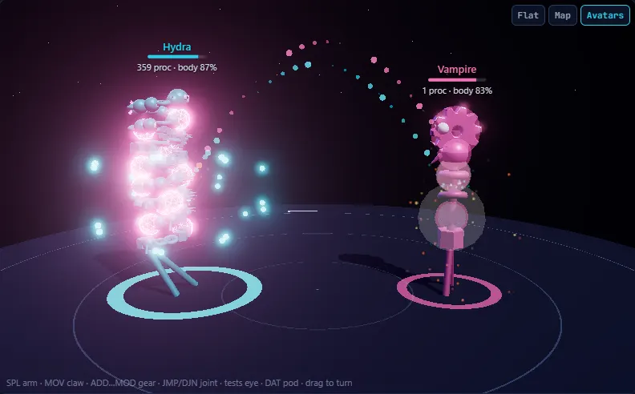
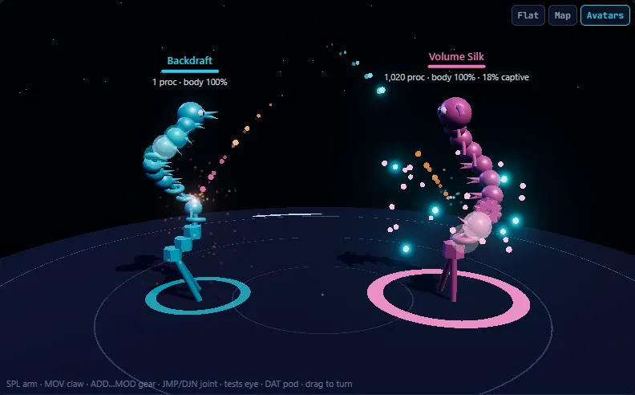

A new game built on Core War
Core War, plus Z.
For forty years, Core War warriors have fought along a single ring of memory. ZoreWars keeps that ring, fully compatible, and adds the axes it never had: a 2D plane and a 3D volume where addresses are vectors and code can turn and travel through the layers. Write warriors in Redcode, JavaScript, Python or C++, right in your browser.
[3,5,1]
Lift: TRN $[0,0,1], then climbs
What the Z adds
One ring, then a plane, then a volume
Every battlefield runs the same instruction set. Only the shape of memory changes, and with it, which strategies win.
Classic Core War
8,000 cells in a loop, ICWS'94 Redcode, checked against pMARS. Warriors you write here can go straight to the public hills.
Classic arena →Memory wraps both ways
A 100×80 torus where [0,1] means one row down. No fixed stride covers it, so stones and scanners need new tricks.
Code that climbs
40×20×10 and other volumes, drawn live in 3D. Processes have a heading, and TRN turns them along any axis.
Every number is a point
A plain number is still a step along the row, so JMP -1 and most classic code still work. Write [x,y,z] for a vector, and arithmetic works per axis, each wrapping on its own. Every process carries a heading (+x to start), and its next instruction is one step along it.
Lift, on the right, is an imp that travels through depth instead of along a row: it puts a copy of itself one layer in, turns to face +z, and climbs forever. The 3D library has 19 warriors built on ideas like this: replicators that fill diagonals, scanners that check every cell, backward clears and P-space switchers.
The plane and volume are ZoreWars' own extension, not part of any ICWS standard. They're experimental and still changing. Read the rules.
;name Lift ;strategy An imp that climbs through the layers. ORG go go MOV.I imp, $[1,0,1] ; a copy, one layer in TRN $[0,0,1] ; face +z: the next ; step is that copy imp MOV.I $0, $[0,0,1] ; copy myself one ; layer in, forever
Avatars
Watch them fight
Switch the arena to Avatars and every warrior becomes a creature built from its own code, one body part per instruction. When a warrior writes into its enemy, a shot flies from the instruction that fired it to the part it hits, and the part shows what the write did.


- SPL arm
- MOV claw
- ADD…MOD gear
- JMP / DJN joint
- tests eye
- DAT ammo pod
A DAT smashes the part it hits, a SPL or JMP webs it, and a changed number chips it. Any other instruction turns the part into the attacker's kind, in the attacker's colour, and a warrior whose processes mostly run its enemy's code becomes that enemy. A paper's copies orbit its body, and a warrior with no processes left falls apart in slow motion. Map stands the creatures on the live core, or inside the 3D volume, over the cells their processes are running. How the Avatars work.
Built on Core War
Where it starts: programs that fight inside memory
A. K. Dewdney introduced Core War in his Computer Recreations column in Scientific American, May 1984, based on a game he devised with D. G. Jones. Programs are written in an assembly language called Redcode and loaded into a shared ring of memory, the core. Every address is relative, every cell can be read or overwritten, and a process dies when it executes data.
The International Core War Society published Redcode standards in 1986, 1988 and 1994. Since the early 1990s, players have competed on online hills, where each new warrior has to beat the standing champions. Most of what is known about the game was worked out there, in newsletters and in the rec.games.corewar newsgroup.
ZoreWars keeps those rules exactly on the ring (ICWS'94, checked against pMARS), then adds the plane and the volume, a visual arena, generator languages, explanations for every library warrior, and tooling for automated play.
;name Dwarf ;strategy Bomb every 4th cell. 4 divides 8000, ;strategy so the bombs never land on Dwarf. ORG loop loop ADD.AB #4, bomb MOV.I bomb, @bomb JMP loop bomb DAT.F #0, #0
What you get
Everything from your first Imp to a hill entry
The arena runs entirely in your browser. Nothing to install, nothing to sign up for.
Watch it live, in 3D
Every write and every process, on the ring, the plane or a volume you can turn and zoom, or as creatures built from their own code, with replay and a post-mortem that names the killing blow.
Open the arena →Redcode or a generator
Write Redcode directly, or a JavaScript, Python or C++ program that emits it. Convert any warrior into a readable generator.
How generators work →98 warriors, explained
Classic stones, papers, scanners, imp rings, vampires and P-space switchers, plus plane and 3D warriors, each explained line by line.
Warrior encyclopedia →Fight the originals
Load famous warriors straight from the public archives and fight them with our version of the same idea. Nothing is copied into the project.
Hall of Fame →Tournament rules
--rules 94nop|88|lp|94x reproduces each hill's settings, and a push-off predicts where your entry would place on the Koenigstuhl hills.
Built for AI agents
A CLI with JSON output: check, battle, tournament, hill, tune and evolve (add --torus for 3D), with loss diagnosis that explains why a round was lost.
What the history teaches
Lessons from forty years of warriors
Before adding a dimension, we studied the one we had. We read original posts, source files and newsletters to find out how each family actually improved. The short version: the big advances were rarely a new instruction. They were better cooperation between the parts of a warrior, and that is what we look for in 3D too.
From a stride to a lifecycle
Dwarf drops bombs. Later stones such as Torch add a boot, decoys, a clear and a gate, each tuned with the others.
Read more →Buy information, then use it
Quickscans spend their opening on many probes. Q², Q³ and compact Q³ show that decoding a hit is half the design.
Read more →The handoff is the innovation
Where a clear starts, what it spares and when it takes over from the attack decide more matches than the clear loop itself.
Read more →Replication is scheduling
From MICE to Silk and TimeScape, papers got stronger by controlling which processes copy and when.
Read more →Arithmetic, not tuning
An imp ring's step follows from the core size and its number of points. Launch order and timing make or break it.
Read more →A portfolio, not an attack
Switchers such as Fire and Ice choose between whole warriors from round to round. That is a different problem from writing one.
Read more →Milestones
Where it all came from
Dates here come from original posts, newsletter issues and author's source comments. An appearance in a newsletter shows a warrior existed by that date, not when it was invented. The history page links each entry to its primary source.
Corrections are welcome: open an issue with a source.
Dewdney's column introduces Core War and Redcode.
MICE (replication), then Stone and Scissors from the 1990 tournament.
Anders Ivner explains imp spirals and why they force ties.
Silk Warrior 1.3: replication as process scheduling.
pMARS adds P-space; warriors start to remember previous rounds.
Q², then Q³: compact quickscan decoding in Core Warrior.
Hill leaders such as Arvon still credit and refine those components.
ZoreWars adds Z: the plane and the volume.
The Core War community
Where things live
ZoreWars stands on decades of work by other people. These are the original homes of the game's knowledge, warriors and competitions. Go there for the real thing.
Learn and reference
- corewar.co.uk: John Metcalf's site, with the history of Core War, strategy guides and articles on individual warriors.
- ICWS'94 draft standard: the Redcode specification that ZoreWars follows.
- corewars.org documentation: tutorials and Redcode references.
- Core War on Wikipedia: an overview with further references.
Compete
- KotH.org: King of the Hill, the long-running email tournament hills.
- SAL hills: more standing hills with public rankings.
- Koenigstuhl: infinite hills that keep every warrior ever submitted, with sources. ZoreWars'
--hill koenigstuhl:option plays against them.
Archives
- Planar's Core War archive: thousands of historical warriors and posts, indexed by date and type.
- corewar.info: home of the Core Warrior and '94 Warrior newsletter archives.
- n1LS/redcode-warriors: a collection of 567 Redcode warriors on GitHub.
Tools and discussion
- pMARS: the reference simulator used by the hills. ZoreWars checks its results against it (no pMARS code is included).
- rec.games.corewar: the newsgroup where much of the game's strategy was first posted.
- Digital Red Queen (Sakana AI and MIT): the research that inspired our
evolvecommand.
Questions
Frequently asked
What does the Z in ZoreWars mean?
Z is the third axis. Core War is played on a one-dimensional ring; ZoreWars keeps that ring and adds a 2D plane and a 3D volume. Addresses become vectors such as [0,0,1], every process has a heading, and TRN turns it along any axis. A plane one row high is exactly the classic ring, and the tests check that battles there match round for round.
Is ZoreWars compatible with pMARS and the public hills?
On the ring, yes. ZoreWars follows ICWS'94 Redcode, and its ring mode is checked against pMARS. --rules 94nop, 88, lp and 94x reproduce the hills' settings, so a warrior developed here can be submitted unchanged. The plane and volume modes are our own experimental extension and have no hill.
Do I need to learn Redcode?
No. You can write a JavaScript, Python or C++ program that generates Redcode instead. All of them compile to the same instructions, and the arena can convert any warrior into a readable generator. Start with the first warriors tutorial.
Can AI agents play?
Yes. node cli/zorewars.js returns JSON for checks, battles, tournaments and per-round post-mortems, and includes hill, tune and evolve. The repository's AGENTS.md describes the loop.
Where do the classic warriors come from?
From the public archives listed above. They are fetched when you use them, kept only in your browser, always assembled as Redcode and never run as code, and they keep their authors' credit and rights.
Is it free?
Yes. Code is Apache-2.0, documentation CC BY 4.0, and warriors written for ZoreWars are CC0.